<nav class="navbar navbar-expand-lg navbar-dark bg-dark" [class.fixed-top]="fixedTop" [class.mt-4]="isGlobalMessage">
  <a class="navbar-brand" href="/" attr.aria-label="{{'shared.main-header.home' | translate}}">
    
    <span class="badge badge-pill badge-danger beta">Beta</span>
  </a>
  <button class="navbar-toggler" type="button" data-toggle="collapse" data-target="#navbarTogglerDemo01"
          aria-controls="navbarTogglerDemo01" aria-expanded="false" aria-label="Toggle navigation">
    <span class="navbar-toggler-icon"></span>
  </button>

  <div class="collapse navbar-collapse" id="navbarTogglerDemo01">
    <ul class="navbar-nav mr-auto mt-2 mt-lg-0">
      <li class="nav-item">
        <a class="nav-link" routerLink="/" routerLinkActive="active" [routerLinkActiveOptions]="{exact:true}">
          {{"shared.main-header.home" | translate}}
        </a>
      </li>
      <li class="nav-item" [class.active]="mapActive">
        <a class="nav-link" routerLink="/map" routerLinkActive="active" [routerLinkActiveOptions]="{exact:true}">
          {{"shared.main-header.map" | translate}}
        </a>
      </li>
      <li class="nav-item dropdown" *ngIf="isAdmin" [class.active]="adminActive">
        <a  role="button" data-toggle="dropdown" aria-haspopup="true" aria-expanded="false"
          class="nav-link dropdown-toggle">
          {{"shared.main-header.statistics" | translate}}
        </a>
        <div class="dropdown-menu bg-dark" aria-labelledby="navbarDropdown">
          <a routerLink="/admin/dashboard" class="dropdown-item">
            {{'shared.admin-nav.dashboard' | translate}}
          </a>
          <a class="dropdown-item" routerLink="/admin/reports">
            {{'shared.admin-nav.reports' | translate}}
          </a>
          <a class="dropdown-item" routerLink="/admin/statistics_numbers">
            {{'shared.admin-nav.figures' | translate}}
          </a>
        </div>
      </li>
    </ul>
    <ul class="navbar-nav mt-2 mt-lg-0" *ngIf="moduleEnable">
      <li class="nav-item">
        <a class="nav-link" routerLink="/own-report" routerLinkActive="active" [routerLinkActiveOptions]="{exact:true}">
          {{"core.home.btn_report" | translate}}
        </a>
      </li>
    </ul>
  </div>
</nav>
